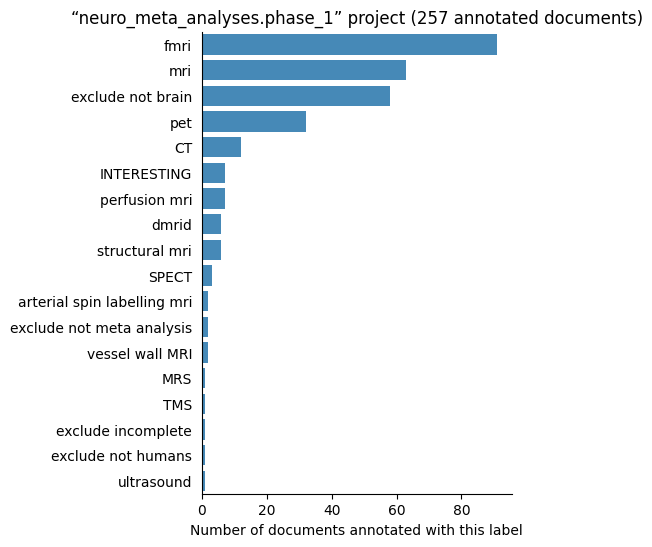
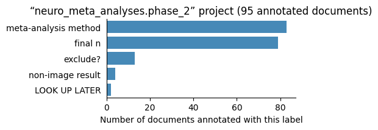
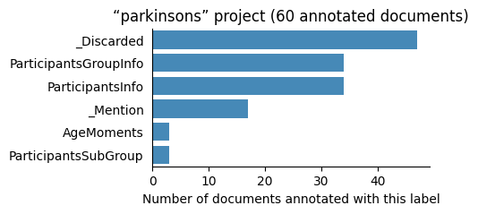
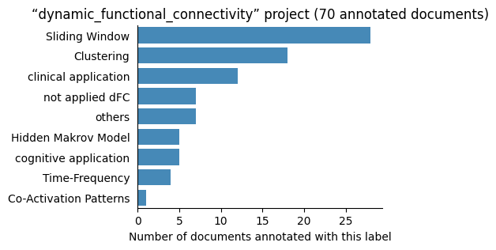
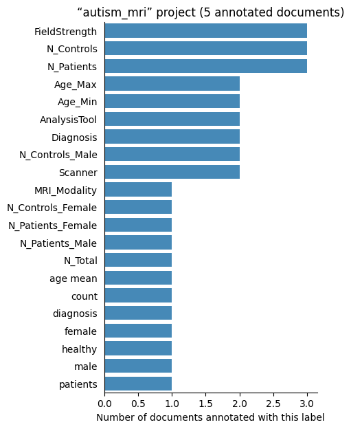
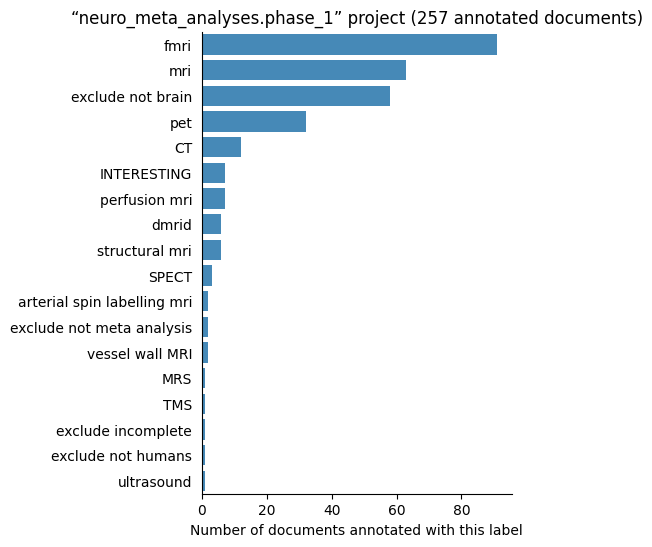
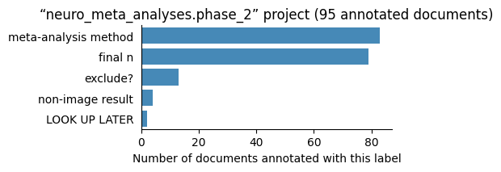
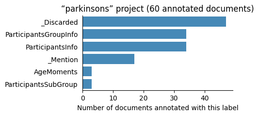
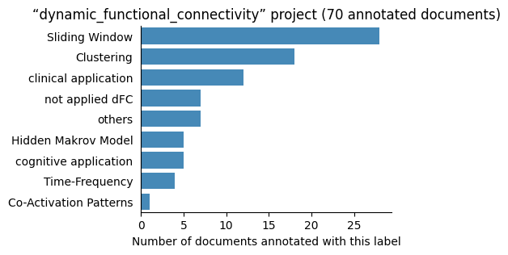
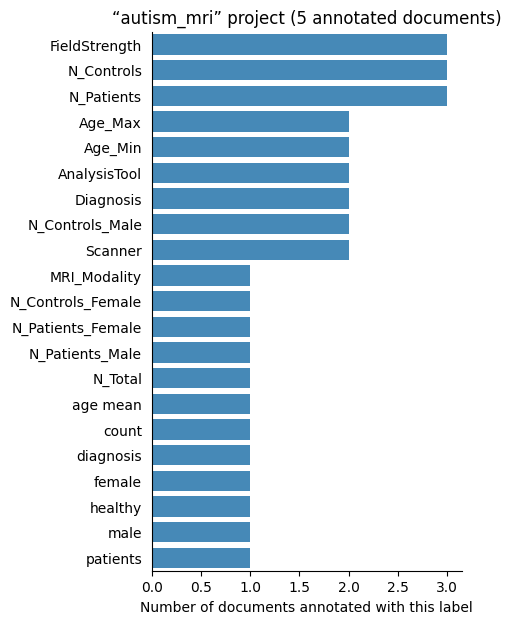

Biomedical literature annotations#
This repository stores manual annotations (a.k.a tagging, labelling) of biomedical scientific publications. Examples of information that has been annotated in some documents are the number of study participants, their mean age, or the imaging modality. Such annotations have diverse uses such as studying the evolution of a scientific field’s methods, evaluating automatic information extraction systems, or informing meta-analyses.
The documents found here are journal articles from PubMedCentral, collected using pubget. The annotations are made with labelbuddy, and data is stored in labelbuddy’s format (JSON).
This page provides a brief overview of the repository’s content, and the rest of the documentation illustrates how to use and contribute to the repository:
Introduction
Analyses
Projects
Projects#
The repository’s contents are organized into projects, found in the projects/ directory.
More details about each project are provided at the end of this book.
Here are the currently existing projects:
| project_name | documents | labels | annotators | annotations |
|---|---|---|---|---|
| neuro_meta_analyses.phase_1 | 257 | 18 | 1 | 301 |
| cluster_inference | 193 | 20 | 2 | 1610 |
| participant_demographics | 188 | 15 | 10 | 3006 |
| neuro_meta_analyses.phase_2 | 95 | 5 | 1 | 202 |
| dynamic_functional_connectivity | 70 | 9 | 1 | 94 |
| parkinsons | 60 | 6 | 1 | 411 |
| autism_mri | 5 | 21 | 1 | 69 |
| neurobridge_fmri | 0 | 0 | 0 | 0 |
| Total | 747 | 87 | 14 | 5693 |
Each project contains 3 directories: labels/, documents/ and annotations/, corresponding to the 3 types of objects stored in this repository.
Documents#
Documents represent scientific journal articles; they contain the article’s text and some metadata.
They are generated by invoking pubget with the --labelbuddy option.
They are stored in labelbuddy’s JSONLines format.
Each document is represented by a JSON dictionary; the keys of interest are:
text: the article’s content as plain text as extracted by pubget.
metadata: basic metadata, including the PubMed ID (pmid), PubMedCentral ID (pmcid), and doi when available.
Below is an example document. (Here the text is abbreviated and the JSON is displayed in a readable way, but in the actual JSONLines file the whole information for each document is on a single line.)
Show code cell outputs
{
"text": "Göttlich, Martin and Beyer, Frederike and Krämer, Ulrike M.\nFront Syst Neurosci, [ … ]",
"metadata": {
"pmcid": 4565057,
"text_md5": "aeacc3bc705b025b4f7aecea35058ca0",
"field_positions": {
"authors": [
0,
59
],
"journal": [
60,
79
],
"publication_year": [
81,
85
],
"title": [
96,
153
],
"keywords": [
167,
276
],
"abstract": [
289,
1183
],
"body": [
1192,
33477
]
},
"part": 1,
"chapter": 1,
"page": 1,
"pmid": 26441558,
"doi": "10.3389/fnsys.2015.00126"
},
"display_title": "pmcid: <a href=https://www.ncbi.nlm.nih.gov/pmc/articles/PMC4565057>4565057</a> — Part 1 Chapter 1 Page 1",
"list_title": "1.1.1 BASCO: a toolbox for task-related functional connectivity"
}
There are currently 1920 documents in the repository, 747 of which are annotated (more details below).
Labels#
Labels are simple tags that can be attached to a portion of a document’s text.
They can optionally have a color and a shortcut_key, used in labelbuddy when we are annotating a document.
For example, here are the labels listed in the cluster_inference project:
The labels are stored in labelbuddy’s JSON format; below is an example.
Show code cell outputs
[
{
"name": "smoothing_snippet",
"color": "#aec7e8",
"shortcut_key": "s"
},
{
"name": "cluster_thresh_used",
"color": "#ffbb78",
"shortcut_key": "c"
},
{
"name": "cluster_thresh_in_voxels",
"color": "#98df8a",
"shortcut_key": "v"
},
{
"name": "cluster_thresh_in_mm",
"color": "#ff9896",
"shortcut_key": "m"
},
{
"name": "nonparametric_cluster_thresh",
"color": "#c5b0d5",
"shortcut_key": "n"
},
{
"name": "info_removed_in_name_extract",
"color": "#c49c94",
"shortcut_key": "i"
},
{
"name": "is_annotated",
"color": "#f7b6d2",
"shortcut_key": "a"
},
{
"name": "annotation_in_progress",
"color": "#b8b8b8",
"shortcut_key": "p"
},
{
"name": "discard_this_paper",
"color": "#dbdb8d",
"shortcut_key": "d"
}
]
There are currently 101 labels in the repository.
Annotations#
Finally, an annotation is the association of a label to a portion of a document’s text. It thus consists of a label name and the character positions where it starts and ends.
Here are a few example annotations:
Annotations are stored in labelbuddy’s JSONL format, below is an example for one document. (Here also, the annotations are layed out in a readable way but in the JSONL files the whole information for one document is on a single line.)
Show code cell outputs
{'annotations': [{'end_byte': 895,
'end_char': 893,
'label_name': 'Diagnosis',
'start_byte': 882,
'start_char': 880},
{'end_byte': 930,
'end_char': 928,
'label_name': 'Diagnosis',
'start_byte': 905,
'start_char': 903},
{'end_byte': 1032,
'end_char': 1030,
'label_name': 'N_Patients',
'start_byte': 1030,
'start_char': 1028},
{'end_byte': 1035,
'end_char': 1033,
'label_name': 'N_Patients_Female',
'start_byte': 1034,
'start_char': 1032},
{'end_byte': 1038,
'end_char': 1036,
'label_name': 'N_Patients_Male',
'start_byte': 1036,
'start_char': 1034},
{'end_byte': 1097,
'end_char': 1093,
'label_name': 'N_Patients',
'start_byte': 1094,
'start_char': 1090},
{'end_byte': 1099,
'end_char': 1095,
'label_name': 'N_Patients_Female',
'start_byte': 1098,
'start_char': 1094},
{'end_byte': 1102,
'end_char': 1098,
'label_name': 'N_Patients_Male',
'start_byte': 1100,
'start_char': 1096},
{'end_byte': 1184,
'end_char': 1178,
'label_name': 'N_Controls',
'start_byte': 1182,
'start_char': 1176},
{'end_byte': 1187,
'end_char': 1181,
'label_name': 'N_Controls_Female',
'start_byte': 1186,
'start_char': 1180},
{'end_byte': 1190,
'end_char': 1184,
'label_name': 'N_Controls_Male',
'start_byte': 1188,
'start_char': 1182},
{'end_byte': 1122,
'end_char': 1118,
'label_name': 'Age_Min',
'start_byte': 1120,
'start_char': 1116},
{'end_byte': 1215,
'end_char': 1207,
'label_name': 'Age_Max',
'start_byte': 1213,
'start_char': 1205},
{'end_byte': 12845,
'end_char': 12811,
'label_name': 'FieldStrength',
'start_byte': 12844,
'start_char': 12810},
{'end_byte': 12855,
'end_char': 12821,
'label_name': 'Scanner',
'start_byte': 12836,
'start_char': 12802},
{'end_byte': 13399,
'end_char': 13364,
'label_name': 'AnalysisTool',
'start_byte': 13389,
'start_char': 13354},
{'end_byte': 13710,
'end_char': 13675,
'label_name': 'AnalysisTool',
'start_byte': 13706,
'start_char': 13671},
{'end_byte': 17945,
'end_char': 17905,
'label_name': 'AnalysisTool',
'start_byte': 17941,
'start_char': 17901}],
'metadata': {'chapter': 1,
'doi': '10.3389/fnbeh.2021.787383',
'field_positions': {'abstract': [460, 2266],
'authors': [0, 225],
'body': [2275, 45399],
'journal': [226, 246],
'keywords': [379, 447],
'publication_year': [248, 252],
'title': [263, 365]},
'page': 3,
'part': 1,
'pmcid': 8883821,
'pmid': 35237135,
'text_md5': 'ff77a940471469970a2557933b01eb11'},
'utf8_text_md5_checksum': 'ff77a940471469970a2557933b01eb11'}
In total there are 5693 annotations in the repository.
Number of labelled documents by project#
Now, we display the number of documents annotated with each label in the different projects:
 








